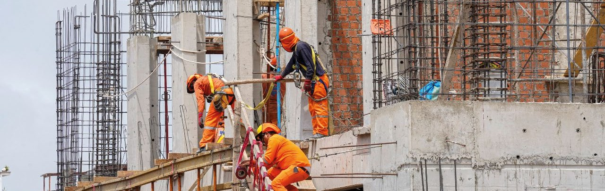
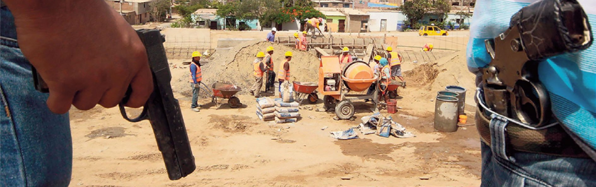
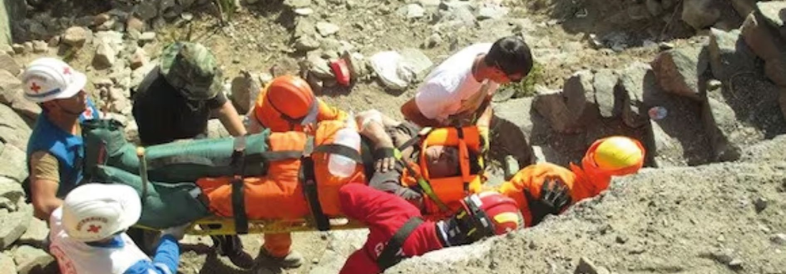

5 PARTE 2: LA INFORMALIDAD EN EL SECTOR CONSTRUCCIÓN
5.1 LA INFORMALIDAD EN EL PERÚ
La informalidad es el principal obstáculo para que el país pueda alcanzar el desarrollo sostenible que implica vincular la competitividad económica, el bienestar social, el aprovechamiento adecuado de los recursos naturales y la institucionalidad democrática. Existe además una delgada línea que separa a las actividades informales de las claramente ilegales y delictivas, como ocurre con la minería ilícita, la explotación incontrolada de los bosques, el contrabando, el tráfico de drogas y de terrenos y la construcción informal.
Sobre esto último, cada vez es más evidente que la ocupación de suelo a través de procesos de invasión y la construcción informal tienen graves consecuencias económicas, sociales, ambientales e institucionales, especialmente en las áreas urbanas del país porque impiden la provisión oportuna y económica de servicios básicos; dificultan la conexión vial y la articulación de la ciudad; producen escasez de espacios públicos y áreas verdes; propician la segregación espacial entre la “ciudad rica” y la “ciudad pobre”; incrementan la contaminación ambiental y constituyen el caldo de cultivo para la criminalidad organizada y la inseguridad ciudadana.
Las familias de menores ingresos son las más afectadas con el tráfico de tierras y la informalidad de la construcción, pues éstas reducen sensiblemente sus oportunidades de progreso personal y ponen en peligro sus propiedades y hasta sus propias vidas: la informalidad es sin duda la principal causa de devastación frente a la ocurrencia de fenómenos naturales severos.
Además, la prevalencia de estas actividades en nuestro país pone en grave peligro la institucionalidad democrática e incentiva la corrupción. Quienes lucran con las actividades delictivas a gran escala y con la informalidad han adquirido un poder significativo, infiltrando sobre todo a las entidades públicas encargadas de combatirlas (la policía, el ministerio público, el sistema judicial, las reguladoras de actividades económicas) pero también han adquirido presencia política sobre todo en los gobiernos locales y regionales.

Entre 2008 y 2020, la construcción informal en Lima superó las 570 mil viviendas, el 67% de la producción total, mientras que en el interior del país podría haber superado el 80%. Un estudio del Ministerio de Vivienda (2012) identificó 8,900 barrios marginales en 79 ciudades, donde vivía el 40% de la población urbana. Estas áreas enfrentan condiciones críticas: el 84% tiene pistas de tierra, el 70% carece de áreas verdes y el 74% es vulnerable a desastres naturales.
Algunas cifras permiten graficar el impacto y las consecuencias de la informalidad en el sector construcción. En primer lugar, a partir de los datos de los censos nacionales y de las mediciones anuales que CAPECO realiza sobre el mercado habitacional formal, la construcción informal de viviendas, que en Lima Metropolitana superó las 570 mil unidades entre el 2008 y el 2020, lo que equivale al 67% de la producción habitacional total en la capital de la república en dicho periodo, de acuerdo a un estudio desarrollado por CAPECO en el 2021. En el interior del país, esta proporción podría haber superado el 80%.
En segundo término, un estudio del Ministerio de Vivienda del año 2012, reveló que, en las 79 ciudades más pobladas del país, existían 8,900 barrios urbano marginales asentados cuyo origen fue la invasión de terrenos, donde residía el 40% de la población urbana (7 millones 600 mil habitantes) y en las que las condiciones de vida y las oportunidades de desarrollo de las familias que habitan en estos barrios son mínimas.
El 84% de estos barrios presentaba pistas de tierra o afirmadas, el 70% no contaba con áreas verdes, el 41% no tenía alcantarillado, el 37% carecía de agua potable y el 74% estaba en condición de vulnerabilidad frente a desastres naturales.
Precisamente, el riesgo de afectación en caso de un desastre natural es mucho mayor entre quienes habitan viviendas construidas informalmente. Un estudio efectuado en el año 2009 por Centro de Estudios y Prevención de Desastres (PREDES) con el patrocinio de la cooperación suiza, estimó que un sismo en Lima Metropolitana con una intensidad similar del que se produjo en Pisco en el año 2007, provocaría 51 mil muertos, 686 mil heridos y 549 mil viviendas inhabitables o colapsadas.
Otro dato relevante es que la construcción informal de viviendas encarece de manera significativa la provisión de servicios públicos. Un estudio desarrollado por GRADE en el año 2012 reflejaba que las familias limeñas que acceden al agua potable a través de camiones cisterna pagaban cinco veces más por este servicio que aquellas que tienen conexión a la red pública. Una evaluación efectuada por CAPECO, comparando un asentamiento informal (Pachacútec en Ventanilla donde viven 47,700 familias) un proyecto habitacional de interés social situado en un lugar cercano (Collique en Comas para 10,600 viviendas), demostró que la inversión requerida para dotar de servicios de agua potable y alcantarillado a un barrio no formal llega a ser nueve veces mayor que la que se necesita para proveérselos a quienes habitarían en un proyecto inmobiliario legal.
Un estudio de Sedapal del año 2021 mostraba que dotar de servicios de agua potable y alcantarillado a una familia asentada informalmente en Lima Metropolitana podía llegar a costar lo mismo que una vivienda social del Programa Techo Propio. (Figura 2.1).
| Figura 2.1. COSTO PROMEDIO POR CONEXIÓN DE AGUA - Lima Metropolitana - Proyectos 2021 | ||||
| Nombre de los proyectos | Inversión total | Conexiones de agua | Costo por Conexión | Cota (msnm) |
|---|---|---|---|---|
| Mejoramiento de sistema de agua potable y alcantarillado en A.H. Cerro El Agustino, frente 1 - Distrito El Agustino | 51,670,381 | 842 | 61,366 | 180-350 |
| Ampliación y mejoramiento de sistemas de agua potable y alcantarillado del sector Cerro La Milla - Distrito San Martín de Porres | 84,725,611 | 1,406 | 60,260 | 120-240 |
| Mejoramiento y ampliación de sistemas de agua potable y alcantarillado en sectores 273, 277, 278, 280, 394 y 395 Distrito Ventanilla | 423,870,877 | 5,121 | 82,771 | 110-360 |
| Mejoramiento y ampliación de sistemas de agua potable y alcantarillado en los Distritos de Ate y Santa Anita | 599,643,820 | 4,215 | 142,264 | 250-430 |
| Saldo de obra del proyecto de ampliación y mejoramiento del sistema de agua potable y alcantarillado del Esquema de Cieneguilla | 34,124,861 | 507 | 67,307 | 230-550 |
| Sectorización del sistema de agua potable y alcantarillado de la parte alta de Chorrillos: Matriz Próceres Distrito de Chorrillos | 451,680,667 | 6,013 | 75,117 | 70-240 |
| Fuente: SEDAPAL | ||||
 En 2022, el 86.4% de los trabajadores del sector de la construcción eran informales, afectando a un millón 126 mil personas, según el Ministerio de Trabajo. La informalidad creció del 80.2% al 86.4% entre 2019 y 2022, exponiendo a los trabajadores a riesgos por falta de cumplimiento normativo, incluso en proyectos estatales. En 2023, el sector generó 1 millón 133 mil empleos, pero perdió 121 mil 872 puestos, una reducción del 9.7% respecto al año anterior.
En 2022, el 86.4% de los trabajadores del sector de la construcción eran informales, afectando a un millón 126 mil personas, según el Ministerio de Trabajo. La informalidad creció del 80.2% al 86.4% entre 2019 y 2022, exponiendo a los trabajadores a riesgos por falta de cumplimiento normativo, incluso en proyectos estatales. En 2023, el sector generó 1 millón 133 mil empleos, pero perdió 121 mil 872 puestos, una reducción del 9.7% respecto al año anterior.
Fotografía: Infobae
Un estudio del Grupo de Análisis para el Desarrollo (GRADE) ha determinado que el 93.0% de la expansión producida en las 43 principales ciudades del país, entre el 2001 y el 2018, corresponde a tráfico de tierras o a lotizaciones informales.
Por último, en el año 2022, un reporte del INEI señalaba que la pobreza afectaba al 27.5% de la población del país y la pobreza extrema al 5.0%. En 2023, estos indicadores alcanzaron el 29.0% y el 5.7%, respectivamente. Ello implicaba un incremento de 8.8 y 2.8 puntos porcentuales respecto a las cifras alcanzadas en 2019. El crecimiento de los niveles de pobreza se dio sobre todo en áreas urbanas donde la invasión y el tráfico de tierras eran más intensos.
Los altos niveles de informalidad que afectan a la construcción demuestran las limitaciones de las dos estrategias emprendidas desde el Estado para combatirla: la regularización y la represión. La necesidad de la regulación, partió de una modificación de la percepción negativa que se tenía de las barriadas, expresada en la Ley de remodelación, saneamiento y legalización de barrios marginales (Ley n.° 13157) de 1961 y alcanzó su máxima expresión en la Ley de Promoción del Acceso a la Propiedad Formal (Decreto Legislativo n.° 803 de 1996, que a través de COFOPRI impulsó la titulación de más de 2.5 millones de títulos de propiedad individual sobre terrenos invadidos en áreas urbanas y rurales.
Otras disposiciones, como la Ley General de Habilitaciones Urbanas (Ley n.° 26878) de 1997, la Ley de Regularización de Edificaciones, del procedimiento para la Declaratoria de Fábrica y del régimen de unidades inmobiliarias de propiedad exclusiva y propiedad común (Ley n.° 27157) y la Ley de Regulación de Habilitaciones Urbanas y de Edificaciones (Ley n.° 29090) establecieron disposiciones muy flexibles para permitir la regularización de urbanizaciones y edificaciones informales. La gran mayoría de estas normas también establecieron reglas muy estrictas que prohibían las invasiones y sancionaban las construcciones informales que se produjeran a partir de la vigencia de aquellas. Incluso, en el 2015 se modificó el artículo 920° del Código Civil que extendió de uno a quince días el plazo para que el propietario de un predio pueda “repeler la fuerza que se emplee contra él o el bien (ocupado ilegalmente) y recobrarlo”.
Todas estas disposiciones no solo fueron incapaces de reducir las invasiones o las construcciones informales sino que fueron en la práctica dejadas sin efecto, por otras disposiciones legales que periódicamente prorrogan el plazo para la regularización de edificaciones y urbanizaciones.
Como consecuencia de ello, las invasiones y las construcciones informales se han convertido en un rentable negocio para asociaciones delictivas muy poderosas que no solo practican la extorsión y la violencia para sus fines, sino que han infiltrado a la administración pública y diversificado su campo de acción, constituyendo redes ilegales de lavado de activos y legalización de ocupaciones informales, mediante transferencias sucesivas de la propiedad. En varias localidades del país, Lima incluida, estas organizaciones criminales han logrado incluso, hacerse del poder local e incluso presencia parlamentaria, convirtiéndolas en “zonas liberadas” en las que impera su propia “legalidad”.
5.2 UN NUEVO ENFOQUE
El fracaso del modelo de regularización-represión para reducir la informalidad hace necesario reemplazarlo por uno nuevo que, sin dejar totalmente de lado las acciones punitivas o de regularización, ponga el acento en iniciativas que promuevan la formalidad. Más que combatir la informalidad se trata de generar incentivos para que la construcción sea formal.
La necesidad y la viabilidad de tal estrategia se sustentan también en cambios que se han venido dando en las condiciones demográficas, sociales y económicas de nuestro país, que podrían favorecer este cambio de modelo. En primer lugar, desde inicios del siglo XXI, la población peruana ha experimentado un inédito proceso de movilidad social positiva como consecuencia de la reducción de los niveles de pobreza (de 49% en 2004 a cerca de 28% en el 2024) y de la desigualdad en la distribución de ingresos (de 0.50 en 2024 a 0.40 en 2024), el ensanchamiento de la clase media emergente (de 28.7% en 2007 a 46.0% en el 2024, en Lima Metropolitana) y la persistencia del bono demográfico hasta el año 2045. Todo ello genera una expectativa por acceder a mejores condiciones de vida y, contrariamente, quita legitimidad social a los procesos informales de invasión de terrenos y de edificación.

Es fundamental que las instituciones estatales incluyan los costos reales de mano de obra en sus presupuestos, y que las oficinas de control prioricen la supervisión del cumplimiento laboral. Además, la cooperación entre sindicatos, gremios y reguladores es clave para garantizar la seguridad laboral y aplicar sanciones a quienes incumplan las normativas.
En segundo lugar, el sector privado ha ido desarrollando productos y estrategias específicas para atender al segmento de mercado emergente. Son prueba de ello: (a) La extensión del retail moderno (tiendas por departamentos, de mejoramiento del hogar y autoservicios) hacia zonas donde predomina la población de ingresos medios y bajos de los principales centros urbanos del país; (b) la provisión de servicios privados de educación y salud que reemplazan a los ineficientes operadores públicos; (c) la difusión del crédito, sea por el fortalecimiento de las instituciones de microfinanciamiento o por la adopción de estrategias específicas para el segmento emergente por parte de las entidades bancarias; (d) la consolidación de clusters productivos con activa presencia de pequeñas y microempresas en zonas emergentes como Gamarra, Villa El Salvador, San Juan de Lurigancho; (e) el desarrollo de una oferta potencial para la provisión de vivienda en estos segmentos, tanto en el ámbito inmobiliario, constructivo como de provisión de materiales.
El Estado también ha comenzado a modificar su enfoque de políticas sociales, destacando la implementación y fortalecimiento de programas habitacionales y urbanos basados en el subsidio a la demanda -que han multiplicado sus presupuestos por ocho desde el 2002- y la puesta en operación de servicios públicos modernos como el Metropolitano, el Metro de Lima y el Tren de Cercanías Barranca-Lima-Ica, que no solo reducen la segregación socio-espacial (la división “ciudad rica” y “ciudad pobre”) sino que promueven buenos hábitos entre sus usuarios y difunden los beneficios de la formalidad y del orden.
La FTCCP y CAPECO buscan enfrentar de una manera integral y coordinada todos los obstáculos que impiden o dificultan el acceso de la población, especialmente la más carenciada, a la construcción formal. Los objetivos estratégicos a alcanzar con esta propuesta son:
Promover la generación de suelo urbano mediante nuevos mecanismos de planificación y gestión territorial, para impulsar la oferta formal de vivienda, equipamientos y servicios y desalentar la invasión de tierras.
Impulsar la provisión de materiales y servicios de construcción de calidad e incentivar la participación de proveedores solventes en el segmento de vivienda social para reducir la participación de la oferta informal e ilegal.
Fortalecer a los operadores que actúan en el diseño y construcción de viviendas en el segmento social, especialmente a través del perfeccionamiento y diversificación de las políticas públicas dirigidas a este segmento.
Incentivar la formalización laboral y la productividad de los trabajadores, de los profesionales y de las empresas en el sector construcción.
Difundir una cultura de la formalidad y de la legalidad, que estimule cambios en la conducta de los ciudadanos así como de los actores sociales y económicos, públicos y privados, y promover la integridad y la transparencia.
5.3 INFORMALIDAD LABORAL EN LA CONSTRUCCIÓN
En cuanto a la mano de obra productiva en el sector construcción, cifras del Reporte Laboral del Ministerio de Trabajo y Promoción del Empleo señalaban que, en el año 2022, alrededor de un millón 303 mil personas, 86.4% de quienes laboraban en esta actividad, trabajaban informalmente; es decir, sin que su unidad productiva esté registrada ante la administración tributaria o sin la posibilidad de acceder a beneficios sociales pagados por el empleador. Al comparar los niveles de informalidad en el periodo 2019-2022, se observa que la tasa de empleo informal mantuvo una tendencia creciente al pasar de 80.2% en el 2019 a 86.4% en el 2022.

Para fomentar la formalidad en el sector de la construcción, la OSCE debe incluir en sus directivas y manuales la obligación de cumplir las disposiciones laborales, supervisar su implementación en procesos de contratación y establecer sanciones claras para las infracciones, asegurando mayor responsabilidad de las entidades contratantes.
Estos trabajadores no perciben las remuneraciones establecidas a través de los pactos colectivos y se encuentran en riesgo de sufrir accidentes porque en este tipo de obras tampoco se cumple la normativa de seguridad y salud que, en el caso de la construcción, es muy exigente. Paradójicamente, una parte de estos trabajadores informales laboran en proyectos desarrollados por entidades estatales, especialmente gobiernos regionales y locales, que se ejecutan a través de las modalidades de contratación de constructores privados o por administración directa, en la cual las obras son realizadas por las entidades públicas con sus propios recursos humanos.
A pesar de ello, en el sector construcción, la dinámica laboral durante el periodo 2019-2022 comenzó reflejando una variación positiva en el año 2019 (5.2%), pero el siguiente año se vio afectado por los efectos adversos de la pandemia COVID-19 al registrar una caída del empleo en 11.1%. No obstante, en el año 2021 se recuperó significativamente al crecer 32.7% y en menor proporción para el año 2022 en 4.7%.
Un estudio del INEI asegura que en el 2023 se generaron un millón 133 mil 142 puestos de trabajo en el sector construcción, lo cual implicó una disminución de 9.7% en comparación con el año previo, lo que significó una pérdida total de 121 mil 872 empleos. (Figuras 2.2 y 2.3)

En cuanto a la contratación, en el caso de la administración directa, los trabajadores de construcción civil son empleados como “obreros municipales” o denominaciones similares, a pesar de que las tareas que desempeñan corresponden a la actividad de construcción civil. Esta modalidad además es muy vulnerable a casos de corrupción y a la baja calidad en las obras, debido a la falta de cuadros técnicos en los órganos ejecutores, a la excesiva discrecionalidad de que disponen éstos últimos para tomar decisiones y a la ausencia de mecanismos independientes de seguimiento y supervisión de obras. Cuando se trata de terceros ejecutores, las partidas de mano de obra incluidas en los presupuestos base que sirven para el proceso de contratación, no siempre consideran las remuneraciones ni las demás condiciones laborales de los trabajadores de construcción civil pactadas en la negociación colectiva por rama de actividad.
En ambos tipos de contratación, además de perjudicar a los trabajadores con menores prestaciones salariales y mayores riesgos, también se afecta la calidad de las obras, porque los operarios menos calificados son los más predispuestos a trabajar en estas condiciones. De otro lado, cuando las entidades públicas contratan a ejecutores privados de obras, se discrimina a aquellas empresas que no están dispuestas a incumplir las obligaciones laborales propias del régimen de construcción civil, restringiendo la competencia y propiciando la participación de empresas menos confiables.
Cabe señalar que, la actividad constructora tiene una completa regulación que garantiza el cumplimiento de las obligaciones laborales y de las exigencias de seguridad que promueve la competitividad de todos los actores que participan en ella.
Estas carencias se agravan por el carácter estacional y temporal del trabajo en construcción, lo que hace que la mayoría de trabajadores de este sector intercalen periodos en los que cuentan con estos mecanismos de protección social con otros en los que no se benefician de ellos.
5.4 PROMOCIÓN DE LA FORMALIDAD EN LA CONSTRUCCIÓN
Desde hace veintidós años, la FTCCP y CAPECO han establecido los salarios y demás beneficios laborales que corresponden a los trabajadores de la construcción a nivel nacional. Este proceso está respaldado por un enfoque en la educación técnica. En este sentido, el sector cuenta con el SENCICO como la entidad de gestión tripartita, responsable de la formación de cuadros técnicos, de la actualización normativa y del desarrollo de la investigación y la innovación en el sector de la construcción con el objetivo de garantizar las competencias laborales de los trabajadores, promover la competitividad de las empresas y favorecer la formalidad sostenibilidad de la industria. No obstante, la acción de la institución educativa en estos ámbitos presenta notorias deficiencias que afectan el trabajo formal, a las que se suma la intervención de bandas delincuenciales que, bajo la fachada de seudosindicatos, no solo extorsionan a trabajadores y empresas, sino que también agravan la precarización de las condiciones laborales en las obras.
En ese contexto, los dos gremios representantes del sector construcción coinciden en que, para promover la formalidad, es necesaria la adecuación de las normas de contratación pública a fin de exigir a las instituciones estatales ejecutoras de obras, que incorporen en sus presupuestos referenciales los costos de mano de obra reales, a fin de garantizar el cumplimiento de las obligaciones laborales derivadas de pactos colectivos y de las normas laborales que rigen el sector. Asimismo, es necesario que las oficinas de control institucional de dichas entidades prioricen en sus planes de supervisión, la verificación del cumplimiento de estas obligaciones.
Las instituciones sindicales, gremiales y reguladoras deben cooperar entre sí con la finalidad de efectuar una adecuada supervisión del cumplimiento de obligaciones laborales y de seguridad tanto por entidades contratantes, empresas de la construcción como por trabajadores y sus organizaciones sindicales de comprometer la aplicación de sanciones gremiales a quienes las incumplan.
Adicionalmente, la FTCCP, CAPECO y CONAFOVICER consideran que las instancias rectoras y supervisoras del Estado que intervienen en los procesos de contratación deben vigilar que las entidades públicas cumplan con las obligaciones laborales que el propio Estado respalda.
Con tal propósito, el Ministerio de Economía debería disponer que en los presupuestos para la contratación pública de obras y en aquellas ejecutadas bajo administración directa, se incluya obligatoriamente los costos de mano de obra que reflejen las remuneraciones y demás prestaciones laborales establecidas en los pactos de negociación colectiva del régimen de construcción civil. Ello implica la modificación del Reglamento de Contrataciones del Estado.
Además, las entidades del gobierno central que cuenten con programas de inversión que son ejecutados por gobiernos subnacionales mediante transferencia de recursos, deberían incluir en sus Reglamentos Operativos y en los convenios de ejecución; la obligación de que los presupuestos de obra incluyan las remuneraciones y demás prestaciones laborales del régimen de construcción civil y que, en sus labores de supervisión de los procesos de contratación y de ejecución de obras, se incluya una verificación del cumplimiento de estos requisitos. Se trata de programas de inversión que tienen altos presupuestos y en los que los mecanismos de control no son lo suficientemente estrictos.
Para garantizar el cumplimiento de las disposiciones laborales y promover la formalidad en el sector, es fundamental que el Organismo Especializado para las Contrataciones Públicas Eficientes (OECE) incluya esta obligación en sus directivas y manuales. Además, sus acciones de supervisión de procesos de contratación deben incluir la verificación de su cumplimiento y establecer sanciones claras para quienes infrinjan esta normativa, fortaleciendo así la responsabilidad de las entidades contratantes.
En esta misma línea, la Contraloría General de la República debe incorporar la verificación de las obligaciones laborales en sus exámenes especiales y acciones de control concurrente en obras públicas. Al identificar incumplimientos, esta entidad debe disponer sanciones efectivas, asegurando que los estándares laborales sean respetados en todas las etapas del proceso de construcción.

Combatir la violencia en el sector exige la cooperación del Ministerio del Interior y el Ministerio Público para enfrentar pseudosindicatos y grupos delictivos responsables de extorsión, pagos ilegales y asesinatos de dirigentes. Eliminar estas prácticas es clave para garantizar un entorno laboral seguro y digno en el sector.
La Superintendencia Nacional de Fiscalización Laboral (SUNAFIL) también tiene un rol crucial al supervisar tanto a contratistas privados como a entidades públicas. Sus acciones de control deben enfocarse en garantizar el cumplimiento de las normativas laborales y, cuando sea necesario, imponer sanciones ante las irregularidades detectadas. También es indispensable mejorar la regulación de la ejecución de obras por administración directa, definiendo con precisión las condiciones que deben cumplir las entidades ejecutoras y los proyectos bajo esta modalidad. Asimismo, deben implementarse mecanismos de control rigurosos que aseguren una gestión transparente y eficiente de los recursos públicos.
En el Perú existe una cultura de tolerancia y complacencia con la informalidad. Para generar, además, una conciencia colectiva en la sociedad en pro de la formalidad, se deberá impulsar la realización de campañas de promoción y difusión de la formalidad en la construcción, dirigidas prioritariamente a las familias (especialmente las más pobres), a los maestros de obra y obreros de construcción, a los comerciantes (en particular los pequeños negocios como ferreterías o depósitos de materiales) y a las municipalidades en donde proliferan las construcciones informales.
Es importante el reconocimiento y la difusión de prácticas que promuevan la construcción formal, desarrolladas por organizaciones sociales, empresariales, laborales y estatales. Para ello será indispensable contar con el apoyo de medios de comunicación, de líderes de opinión; así como de instituciones que evalúan y reconocen las buenas prácticas sociales y empresariales.
También será crucial adoptar mecanismos que faciliten el acceso a la información técnica sobre materiales de construcción. Esto debe enmarcarse dentro de las normas legales de rotulado y etiquetado, que obligan a identificar el país de origen, el fabricante, las especificaciones técnicas básicas, el cumplimiento de normas técnicas y las instrucciones para su correcto uso, garantizando así la transparencia y la calidad en el mercado.
Paralelamente, se debe fortalecer las asociaciones de propietarios, juntas de vecinos y organizaciones comunales, promoviendo actividades que favorezcan la convivencia, la solidaridad, el respeto por los derechos ajenos y el cumplimiento de obligaciones legales. Estas organizaciones también son claves para garantizar el mantenimiento adecuado de viviendas y áreas comunes, lo que resulta especialmente relevante en los programas de vivienda social y mejoramiento de barrios, donde la gestión comunitaria tiene un impacto directo en la calidad de vida.
Es fundamental incorporar en el currículo escolar contenidos pedagógicos que fomenten valores como la formalidad, el respeto por las leyes y el ejercicio de derechos ciudadanos, destacando los beneficios de la construcción formal. Para asegurar un alcance efectivo, es indispensable usar redes sociales y medios audiovisuales que permitan un mensaje claro y homogéneo tanto para alumnos como profesores. Complementando estas acciones, una campaña masiva y permanente de difusión sobre programas estatales de vivienda, ahorro previo, uso y mantenimiento de infraestructuras y mecanismos pro formalidad, contribuirá a un mayor entendimiento y adhesión. Esto requiere una estrecha coordinación entre las instancias del Gobierno Nacional y los agentes privados involucrados en estos programas.
Adicionalmente, se necesita que el SENCICO incorpore en sus investigaciones proyectos que mejoren competencias laborales, optimicen la seguridad y salud en el trabajo y eficiente en la gestión de procesos. Estos objetivos deben definirse en conjunto con empresas, sindicatos, academia y el Estado, alineándose con las políticas del CONCYTEC.
Igualmente, se requiere actualizar constantemente la capacitación técnica para preparar a trabajadores y profesionales en nuevos materiales, sistemas y tecnologías innovadoras, mejorando la competitividad y sostenibilidad del sector. Y, se precisa una estrategia integral contra la violencia en obras, que incluya prevención, investigación y sanción a bandas organizadas, junto con la promoción de buenas prácticas de seguridad. Esto garantizará un sector más profesionalizado, seguro y eficiente. Estos temas se tratarán en las siguientes partes del presente libro.
5.5 ESTRATEGIA CONJUNTA PARA LA FORMALIZACIÓN LABORAL
En busca de promover la formalidad, la competitividad de trabajadores y empresas de construcción civil; así como el cumplimiento de las obligaciones laborales, sociales, de seguridad y salud ocupacional a través de la realización y profundización de iniciativas de difusión, formación, sensibilización, investigación, capacitación y modernización normativa y legal en beneficio de los trabajadores de construcción civil; la FTCCP, CAPECO y el CONAFOVICER suscribieron en octubre de 2018 un Convenio de Cooperación Interinstitucional con seis objetivos específicos.
El primero es formular propuestas legislativas, normativas y administrativas que promuevan el cumplimiento de las obligaciones laborales y las normas de seguridad y salud ocupacional, tanto por entidades públicas como por empresas privadas.
Segundo, efectuar campañas conjuntas para promover y facilitar a las entidades públicas y empresas privadas, el cumplimiento de las obligaciones laborales y sociales, así como las normas de seguridad y salud ocupacional en el sector construcción. Tercero, impulsar, promover la realización de proyectos de investigación y desarrollo dirigidos a fomentar la competitividad y la productividad de trabajadores y empresas del sector construcción.
En cuarto lugar, impulsar la realización de programas de capacitación, formación técnica y certificación de competencias en beneficio de los trabajadores de construcción civil afiliados a CONAFOVICER. Además, en quinto lugar, colaborar en la identificación, y de ser el caso, en el desarrollo de proyectos conjuntos de responsabilidad social, dirigidos a mejorar las condiciones de vida y oportunidades de desarrollo de los trabajadores de construcción civil afiliados. En sexto lugar, se coincide en desarrollar campañas conjuntas de promoción de la formalidad laboral entre actores públicos y privados, y en la sociedad en general.
Desde la suscripción de este Convenio, las tres entidades han venido efectuando un conjunto de actividades dirigidas a fomentar la formalización del empleo en la construcción, siendo sus principales propósitos promover el cumplimiento en el pago de las remuneraciones de los trabajadores de construcción civil que son acordadas en los pactos colectivos suscritos por la FTCCP y CAPECO y ratificadas por la autoridad del trabajo; impulsar el proceso de certificación de competencias de los trabajadores; optimizar el proceso de implementación del Registro Nacional de Trabajadores de Construcción Civil – RETCC y del Registro Nacional de Obras de Construcción Civil – RENOCC; fomentar la innovación y la investigación en la actividad constructora para favorecer la competitividad de trabajadores, la optimización de la gestión en obras y la difusión de tecnologías y procesos constructivos sostenibles.
5.6 COMITÉ DE FORMALIZACIÓN
Para la implementación de este convenio, la FTCCP, CAPECO y el CONAFOVICER conformaron el Comité de Formalización Laboral, instancia encargada de formular propuestas de políticas en materia de construcción civil orientadas a impulsar las grandes obras de infraestructura bajo criterios de formalización del trabajo y reconocimiento de los derechos consagrados en el Régimen Especial Laboral de Construcción Civil.
De igual manera, el Comité de Formalización comparte el interés por promover la competitividad de los trabajadores y las empresas del sector, razón por la cual centra su agenda en la sensibilización y la incidencia política de los actores públicos y privados involucrados. En ese marco, desarrolla acciones vinculadas con la difusión de los acuerdos de la negociación colectiva y la elaboración de propuestas que contribuyan a fortalecer la institucionalidad del sector.
En coherencia con estos objetivos, los ejes temáticos sobre los cuales el Comité orienta sus acciones interinstitucionales abarcan diversos ámbitos: el respeto y la fiscalización del cumplimiento de los derechos laborales; la protección del régimen especial de construcción civil y de los derechos de los trabajadores; el acceso a mejores niveles salariales; la promoción de la salud y seguridad ocupacional; y la consolidación de la formalización laboral. La consecución de estos propósitos requiere el compromiso activo y sostenido del Gobierno nacional, los gobiernos regionales y locales, así como del sector privado, a fin de garantizar su efectiva implementación y sostenibilidad en el tiempo.
Para que las entidades gubernamentales comprendan y adopten los objetivos del Comité de Formalización en sus gestiones, ha sido importante el fortalecimiento de capacidades. A través de diversas actividades, el Comité ha buscado sensibilizar a estas entidades sobre la importancia de incorporar el Régimen Laboral Especial de Construcción Civil en sus presupuestos y proyectos, y de alinear sus procesos con los principios establecidos en dicho documento.
Uno de los principales aliados en este esfuerzo de concientización ha sido la Asamblea Nacional de Gobiernos Regionales (ANGR), entidad que agrupa a las 25 regiones del país y ejerce una influencia clave en la ejecución de obras de infraestructura. En un taller virtual, fue expuesto ante sus representantes el Manual de Régimen Laboral Especial de Construcción Civil, una herramienta orientada a fomentar la inclusión de los costos laborales y las tablas salariales correspondientes en los presupuestos regionales. Este manual busca asegurar que las obras impulsadas desde los gobiernos subnacionales contemplen desde su planificación las obligaciones laborales, garantizando condiciones adecuadas para los trabajadores del sector.
Sensibilizar a las entidades gubernamentales ha sido clave para que adopten los objetivos del Comité de Formalización y promuevan la incorporación del régimen laboral de construcción civil.
La Asociación de Municipalidades del Perú (AMPE) ha sido otro actor fundamental en este proceso de fortalecimiento de capacidades. La agrupación, que cuenta con la participación de cerca de 2,000 gobiernos municipales, ha colaborado en la difusión del documento a sus representantes. A ellos, se les explicó la obligatoriedad de incorporar este régimen en sus presupuestos, especialmente cuando se trata de obras de administración directa. Adicionalmente, se elaboró el Manual Orientador para el Cumplimiento del Régimen de Construcción Civil, dirigido a funcionarios de los gobiernos subnacionales, que facilita la incorporación de las disposiciones del régimen en los proyectos municipales, ayudando al cumplimiento de la normativa laboral por parte de los gestores de las obras locales.
Las alianzas estratégicas han constituido un factor clave para fortalecer el desarrollo y la regulación del sector de la construcción, promoviendo también la colaboración con organismos internacionales y entidades sectoriales. Estas alianzas buscan no solo mejorar las condiciones laborales y de seguridad de los trabajadores, sino también apoyar el crecimiento ordenado y regulado de la industria a través de buenas prácticas y enfoques interdisciplinarios.
Con la Oficina Regional de la Organización Internacional del Trabajo (OIT) para América Latina y el Caribe, con sede en el Perú, se acordó una agenda conjunta que aborda temas como el diálogo social, la legislación laboral comparada así como la salud y seguridad en el trabajo. La experiencia y el conocimiento de la OIT en el ámbito laboral global aportan una perspectiva valiosa que puede ayudar a elevar los estándares del sector en el país, promoviendo un ambiente de trabajo seguro, justo y equilibrado.
Asimismo, el Ministerio del Interior (MININTER), que tiene la obligación de encabezar la lucha contra la violencia en el sector de la construcción, también ha sido un gran aliado. Dado el impacto negativo de la violencia en la productividad de las empresas y la seguridad de los trabajadores, a través del Decreto Legislativo n.° 1187 se constituyó en el MININTER una comisión de carácter permanente para atender la problemática del crimen organizado en el sector, de la que forman parte la Policía Nacional, el Ministerio Público, el Poder Judicial, la Asociación de Municipalidades del Perú, la Asociación de Gobiernos Regionales, el Ministerio de Trabajo y el de Vivienda. Aunque, lamentablemente ni CAPECO ni la FTCCP son miembros natos de esta comisión, se ha logrado su inclusión como invitados permanentes en sus reuniones. Esto permite que ambas instituciones participen activamente en la entrega de información relevante a las entidades de seguridad, ayudando a fortalecer las acciones preventivas y de coacción ante situaciones de violencia en el sector.
5.7 SEGURIDAD Y SALUD EN EL TRABAJO
A la batalla contra la informalidad laboral en el sector construcción se suma el fomento de la seguridad y salud en el trabajo. Según un reporte de la OIT del año 2023, cerca de tres millones de trabajadores mueren cada año en el mundo debido a accidentes y enfermedades relacionados con el trabajo, un aumento de más del 5% en comparación con 2015. La agricultura, la construcción, la silvicultura, la pesca y la industria manufacturera son los sectores más peligrosos, que suman 200 mil muertes por año, debido a lesiones profesionales, lo que representa el 63% del total.
Por ello, la Seguridad y Salud en el Trabajo (SST) en este sector es una preocupación constante a nivel nacional y regional debido a los riesgos inherentes. Esta actividad implica una amplia gama de procesos. Abarca trabajos en excavaciones, en altura, en caliente, en espacios confinados, izaje, etcétera, lo que la convierte en una de las industrias más peligrosas en términos de accidentes de trabajo y enfermedades ocupacionales.

La FTCCP impulsa una cultura de seguridad en construcción mediante capacitación continua, protegiendo a los trabajadores y mejorando la productividad en proyectos. Junto al MTPE, Sunafil, CAPECO y direcciones regionales, desarrolla actividades para fortalecer la prevención y promover la salud física y mental, reafirmando su compromiso con el bienestar laboral y el respeto por la vida.
Fotografía: Diario Correo
Esta preocupación se acrecienta por ciertos factores que siguen atentando contra el sector y los cuales deben ser enfrentados permanentemente. Aún se observan condiciones de trabajo peligrosas, cultura de seguridad deficiente, falta de capacitación y entrenamiento insuficiente.
Según datos del Ministerio de Trabajo y Promoción del Empleo (MTPE), durante la última década, en el sector Construcción formal se notificaron en promedio 2,474 accidentes de trabajo no mortales y 24 accidentes mortales por año, es decir, en promedio se han notificado siete accidentes de trabajo no mortales por día y dos accidentes de trabajo mortales por mes.
En ese contexto, la FTCCP y CAPECO, con el legítimo interés de reducir la elevada siniestralidad laboral y mejorar las condiciones de los trabajadores impulsaron la promulgación de la Ley n.º 29783 - Ley de Seguridad y Salud en el Trabajo (SST).
El 28 de abril de 2010, el grupo parlamentario Partido Nacionalista Peruano presentó el proyecto de Ley basado en una propuesta hecha por la Confederación General de Trabajadores del Perú (CGTP) y la FTCCP. Este no solo comprendía al sector de la construcción sino también a todos los trabajadores del ámbito privado. Proponía elevar a rango de Ley el Decreto Supremo n.º 009-2005-TR, Reglamento de Seguridad y Salud en el Trabajo, elevar las sanciones por infracción a la norma y crear el Consejo Nacional de Salud y Seguridad en el Trabajo.
En la exposición de motivos, dicha iniciativa legislativa señalaba que el Perú era el único país en la subregión andina que carecía de un marco de protección con rango de Ley en esta materia. Por ello, era indispensable una norma con el objetivo de promover una cultura de prevención de riesgos laborales y que abarque el deber de prevención de los empleadores, el rol de fiscalización y control del Estado y la participación de los trabajadores y sus organizaciones sindicales; quienes a través del diálogo social velarán por la promoción, difusión y cumplimiento de la normativa sobre la materia. CAPECO participó en la discusión de esta norma y apoyó su promulgación.
El 20 de agosto de 2011 se publicó en el Diario Oficial El Peruano la Ley n.° 29783, conteniendo la normativa marco que se sustenta en los derechos constitucionales a la integridad física, a la protección de la salud de las personas; así como la responsabilidad del Estado para determinar la política nacional de salud, normando y supervisando su aplicación. Esta Ley fue firmada por el presidente de la República, Ollanta Humala. Posteriormente, en abril de 2012 se firmó el Decreto Supremo n.° 005-2012-TR que aprobó Reglamento de esta Ley.
Por el esfuerzo y la dedicación puestos de manifiesto en la aprobación de esta norma, la CGTP y las bases sindicales de la FTCCP reconocieron el apoyo de destacados profesionales que impulsaron decididamente la promulgación de la ley.
Además, entre otras iniciativas, la FTCCP fomenta una serie de campañas de Promoción de la Cultura de Seguridad y Salud en el Trabajo (SST). Estas buscan no solo reducir los riesgos asociados a las distintas áreas de la construcción, sino también educar a miles de trabajadores sobre la prevención de accidentes y la implementación de medidas de seguridad en sus labores diarias. La FTCCP se ha propuesto fomentar un entorno laboral más seguro y saludable, consciente de que la educación y la prevención son pilares fundamentales para lograr un impacto positivo en el sector, propósito que también comparte CAPECO.
Con un enfoque integral, las campañas de la FTCCP abordan los principales riesgos que están presentes en el entorno laboral de la construcción. Estas iniciativas se centran en capacitar a los trabajadores en áreas específicas que, por su naturaleza, son especialmente propensas a accidentes si no se adoptan las precauciones adecuadas. También en las iniciativas conjuntas que desarrollan la FTCCP y CAPECO, el tema de la prevención de riesgos en las obras es de absoluta prioridad.
Entre los temas prioritarios en esta capacitación, destacan la Ergonomía y Manipulación Manual de Cargas, donde se instruye a los trabajadores en técnicas ergonómicas que facilitan la correcta manipulación de materiales y equipos, lo que ayuda a evitar lesiones y mejorar la eficiencia en las tareas. Este entrenamiento es fundamental para reducir el riesgo de lesiones musculo-esqueléticas, que son comunes en el sector de la construcción. Otros temas esenciales son Excavaciones y Zanjas, Trabajo en Altura, Temperaturas Extremas, Energía Eléctrica, Bloqueo y Etiquetado sobre máquinas y equipos, Espacios Confinados.
A través de estas campañas, la FTCCP busca consolidar una cultura de seguridad en el sector de la construcción que permita a los trabajadores desempeñar sus labores en entornos más seguros y saludables. En este mismo sentido, CAPECO y la FTCCP coinciden en que la capacitación continua en estas materias no solo garantiza la protección de los trabajadores, sino que también contribuye a elevar los niveles de eficiencia y productividad en los proyectos de construcción, fortaleciendo así a toda la industria y promoviendo el respeto por la vida y el bienestar laboral.
En esa línea, la FTCCP y CAPECO junto con la Dirección de Seguridad y Salud en el Trabajo de la Dirección General del MTPE, las Direcciones y Gerencias Regionales de Trabajo y Promoción del Empleo, las Intendencias Regionales de la SUNAFIL iniciaron actividades conjuntas con el objetivo de afianzar la cultura de prevención, a través de acciones de difusión y sensibilización que permitirán promover la salud física y mental en el ámbito laboral.
Hay que destacar que la FTCCP ha promovido desde hace varios años el establecimiento de límites al peso que puede cargar un trabajador de construcción, por ser un factor que puede afectar la salud de quien la efectúa. En marzo 2024 se realizó con éxito el Foro 25 kilos ¡No más! en la sede del Congreso de la República. Se expuso que la iniciativa busca reducir el peso de las bolsas de cemento, con el fin de prevenir enfermedades musculoesqueléticas ocasionadas por la carga de peso excesiva en obras de construcción. Este esfuerzo es parte de una estrategia más amplia para mejorar las condiciones laborales y garantizar la seguridad y salud de los trabajadores del sector.
De manera conjunta, la FTCCP y CAPECO tuvieron un acercamiento con los principales productores de cemento del país, con los que han coincidido en la necesidad de adecuar progresivamente los sistemas productivos y logísticos de la industria cementera para concretar este objetivo.

En marzo de 2024, el Foro 25 kilos ¡No más! resaltó la necesidad de reducir el peso de las bolsas de cemento para prevenir enfermedades musculoesqueléticas en la construcción. Este esfuerzo, parte de una estrategia integral, busca mejorar las condiciones laborales mediante estándares internacionales, ayudas mecánicas, capacitación sobre los riesgos asociados al manejo de cargas pesadas.
En las obras de gran envergadura o de construcción formal, generalmente se emplean sistemas mecanizados para el acarreo de bolsas de cemento o para la provisión de concreto premezclado, lo que minimiza la manipulación manual y, por ende, el riesgo de lesiones. Sin embargo, en las construcciones de menor escala y en las que se ejecutan informalmente, las bolsas de cemento de 43.5 kg siguen siendo el estándar, lo que representa un riesgo considerable para los trabajadores que las manipulan constantemente. Entonces, es vital generar conciencia sobre los riesgos asociados al manejo de cargas pesadas. Esto incluye el uso de ayudas mecánicas para el transporte de materiales, la reducción del peso de las bolsas a estándares internacionales (por ejemplo, bolsas de 25 kg) y la capacitación continua en ergonomía y prevención de riesgos laborales.
La FTCCP, mediante sus campañas, promueve una cultura de Seguridad y Salud en el Trabajo - SST, integrando elementos normativos esenciales que contribuyen a un entorno laboral más seguro y eficiente. Entre estos aspectos se incluyen la identificación de peligros, la evaluación de riesgos y la creación de planes específicos de SST para cada proyecto, permitiendo así establecer medidas preventivas adaptadas a las características de cada obra. Herramientas como el Análisis de Trabajo Seguro (ATS) y el Permiso de Trabajo de Alto Riesgo (PETAR) son fundamentales para asegurar que los trabajadores cuenten con los controles y permisos necesarios antes de ejecutar tareas de riesgo elevado.
Además, CAPECO y la FTCCP destacan la importancia de la capacitación continua y la responsabilidad compartida entre empleadores y trabajadores. La formación en el uso de equipos de protección personal y en la identificación de riesgos es clave, así como el compromiso de ambas partes para cumplir con las normativas de SST. En obras de gran envergadura, subcomités y comités técnicos coordinan la seguridad y aseguran que las distintas fases del proyecto se realicen en cumplimiento de las directrices de SST.
Ambos gremios enfatizan la preparación para emergencias y la vigilancia de la salud de los trabajadores en actividades de alto riesgo, promoviendo tanto la seguridad física como la prevención de enfermedades ocupacionales. Esta vigilancia médica, junto con planes de respuesta ante emergencias y el uso adecuado de equipos de protección personal, forman un marco integral que contribuye a un ambiente laboral seguro y reduce la incidencia de accidentes en el sector de la construcción.
En este tema es importante mencionar, que mediante Resolución Suprema n.° 023- 2018- TR se creó la Comisión Multisectorial de naturaleza temporal para la elaboración del informe técnico que contenga el proyecto de reglamento de seguridad y salud en el trabajo para el sector construcción, cuya conformación contó con la participación de representantes del Ministerio de Trabajo y Promoción del Empleo, del Ministerio de Salud, del Ministerio de Vivienda, Construcción y Saneamiento, del Seguro Social de Salud (EsSalud) y, los representantes de la Federación y CAPECO. Así, en consenso, se aprobó el Reglamento de Seguridad y Salud en el Trabajo para el sector construcción, que se concretizara mediante el Decreto Supremo n.° 011-2019-TR, publicado el 11 de julio de 2019.
Igualmente, en el marco del diálogo con resultados, mediante Resolución Ministerial 078- 2021-TR, de 7 de mayo del 2021, se crea un Grupo de Trabajo Multisectorial en que el participaron, entre otros, los representantes de la FTCCP y CAPECO, con la finalidad de elaborar los protocolos específicos para la vigilancia de la salud de los trabajadores del sector construcción.
Este grupo de trabajo efectuó una labor muy positiva, logrando la emisión del Decreto Supremo n.º 018-2022-TR del 29 de diciembre de 2022, mediante el cual se aprobaron cinco protocolos específicos para la vigilancia de la salud de los trabajadores del sector construcción: a) Protocolo para la vigilancia por exposición a agentes biológicos; b) Protocolo para la vigilancia de la salud por exposición a agentes físicos. c) Protocolo para la vigilancia de la salud por exposición a agentes químicos. d) Protocolo para la vigilancia de la salud por exposición a factores de riesgo ergonómicos. e) Protocolo para la vigilancia de la salud por exposición a factores de riesgo psicosociales; aplicables a todos los trabajadores de la actividad constructora a nivel nacional.
5.8 PRESTACIÓN DE SERVICIOS DE SALUD
La seguridad y salud de los trabajadores son pilares fundamentales para garantizar su bienestar y desempeño laboral. Y ante la necesidad de fortalecer la atención médica y responder a las deficiencias del sistema de la seguridad social en el país, la Federación, CONA y CAPECO impulsaron la creación de una Entidad Prestadora de Salud (EPS) diseñada para ofrecer servicios médicos de calidad.
Es así como constituyen GRANDIA EPS, probablemente el esfuerzo de gestión tripartito más ambicioso desarrollado en los veintidós años de diálogo porque, en primer lugar, eleva esta relación a un nivel de excelencia. Estas tres entidades no solo han alcanzado consensos en materia de políticas, sino que también han construido un nivel muy alto de confianza mutua y alineado sus aspiraciones hasta convertirse en accionistas de una misma empresa.
Este modelo es completamente disruptivo, ya que, históricamente, los sindicatos se han concebido como herramientas de defensa frente a las empresas. Sin embargo, en este caso, un sindicato decide crear una compañía, lo cual supone un impacto doctrinario significativo. Por otro lado, también es innovador que el gremio empresarial haya decidido asociarse con un sindicato para emprender proyectos en conjunto.
El segundo nivel de importancia de GRANDIA radica en su propósito: la creación de una EPS para los trabajadores de la construcción civil, respondiendo así un vacío evidente en la industria de servicios de salud. Los obreros, en su mayoría formales, enfrentan limitaciones en el acceso a una seguridad social eficaz. Ahora, los aportantes al CONA tienen a su disposición una alternativa de salud privada adaptada a sus necesidades.
Actualmente, las pocas EPS que operan en el mercado no comprenden las particularidades del trabajador de construcción civil y, por ende, carecen de estrategias específicas para atenderlos. Aquí es donde la alianza entre la Federación, CONA y CAPECO llena este vacío. GRANDIA no solo pretende ser una solución de mercado, sino también una empresa con un enfoque claro, orientada a mejorar las condiciones de vida de estos trabajadores y de aquellos que no son atendidos por otros seguros de salud.
El tercer nivel de relevancia de este modelo radica en su carácter social. Si bien el término “social” puede generar ciertas reservas, en este caso se expresa a través de un modelo de negocio inclusivo, orientado a generar valor compartido. La propuesta plantea que las utilidades o excedentes derivados de los aportes al Seguro Complementario de Trabajo de Riesgo (SCTR) se destinen a reducir los costos que los trabajadores asumen por los servicios de salud. Este enfoque no solo busca beneficiar a los trabajadores de la construcción, sino que también podría extenderse a otros sectores con características y desafíos similares, como el agro, la minería o la pesca. De esta manera, GRANDIA no representa únicamente un emprendimiento económico, sino también una apuesta por redefinir la gestión empresarial con un enfoque más humano, inclusivo y sostenible.
Un cuarto punto a considerar es el perfil de riesgo laboral de los trabajadores de construcción. Estos enfrentan enfermedades y dolencias particulares, distintas a las de otros sectores, por lo que requieren un enfoque diferenciado de atención médica. GRANDIA se posiciona como una EPS diseñada para abordar estas necesidades.
Desde el inicio de sus operaciones en 2024, GRANDIA ha buscado establecerse como una alternativa competitiva en el mercado. Opera dentro del marco legal establecido hace veintiocho años con la Ley de Modernización de la Seguridad Social. Su modelo de negocio busca mejorar el acceso a la salud mediante planes accesibles y servicios de alta calidad, no solo por sus precios, que oscilan entre 120 y 140 soles por persona (aproximadamente un 50 por ciento menos que el mercado tradicional), sino también por su enfoque en una atención más eficiente y personalizada.
La EPS ha diseñado un sistema que promueve el uso de centros de atención primaria en los que médicos generales son capaces de resolver el 90% de los casos comunes, reduciendo así los costos y descongestionando las clínicas. Este enfoque también permite optimizar la experiencia del usuario, brindando un servicio más rápido y accesible. Además, la EPS ofrece a los afiliados la posibilidad de elegir los centros de salud donde desean ser atendidos, ajustándose a las necesidades y preferencias de cada persona.
Otro de los pilares de GRANDIA es que su Seguro Complementario de Trabajo de Riesgo (SCTR), obligatorio para todos los trabajadores de la construcción, según el Decreto Supremo 003-98-SA, está diseñado con un enfoque adaptado a las necesidades del obrero. Al haber sido creada por gremios que conocen de cerca las condiciones laborales de la construcción, la EPS comprende los riesgos específicos que enfrentan los trabajadores y ofrece soluciones diseñadas a medida.
En su primer año de actividades, GRANDIA ha alcanzado más de 25 mil asegurados. En el ámbito del Seguro Complementario de Trabajo de Riesgo (SCTR), la Entidad Prestadora de Salud proyecta triplicar esta cifra en el corto plazo, manteniendo el foco en la calidad y accesibilidad de sus servicios. Uno de los principales desafíos para los trabajadores de construcción civil, debido a la naturaleza intermitente de su empleo, es la continuidad en el acceso a los servicios de salud. Para afrontarlo, GRANDIA planea implementar un fondo especial que mantenga la cobertura incluso en los meses sin aportes, reafirmando su compromiso social con los trabajadores de ingresos medios y bajos.
Actualmente, dispone de una red de más de 120 clínicas afiliadas en diversas regiones del país, entre ellas Lima Metropolitana, Callao, Piura, Arequipa, Cusco, Junín, San Martín, Ucayali, Cajamarca, Ica, Tacna, Tumbes, Puno, Moquegua y Loreto, con atención en todas las especialidades médicas y de rehabilitación física.
De cara al futuro, el siguiente paso de esta alianza tripartita será la creación de centros de salud propios. Cabe destacar que algunas Entidades Prestadoras de Salud actualmente operan cadenas de clínicas, modelo que podría replicarse en beneficio de los trabajadores de la construcción. En ese marco, GRANDIA proyecta establecer centros de atención primaria en zonas estratégicas, priorizando aquellas donde existe una mayor concentración de afiliados. Estos centros serían financiados mediante inversiones de terceros interesados en contribuir a la mejora del sistema de salud peruano, lo que garantizaría su sostenibilidad y permitiría la expansión progresiva de la cobertura.
Finalmente, el modelo de gestión de GRANDIA EPS se encuentra sujeto a una estricta regulación, que asegura transparencia, solvencia financiera y calidad de servicio. Todas sus operaciones están supervisadas por la Superintendencia Nacional de Salud (SuSalud), entidad que exige reportes periódicos, auditorías y reservas técnicas destinadas a garantizar la estabilidad y continuidad de las prestaciones ofrecidas.
5.9 PUNTO DE VISTA
5.9.1 Combatir la informalidad es un desafío para el desarrollo y la dignidad laboral
Por: Ing. Carmela Sifuentes Inostroza, Presidenta CGTP Cajamarca - Dirigenta Nacional CGTP
Este libro, centrado en la informalidad y otros temas relacionados, representa un valioso aporte al quehacer laboral, especialmente en el sector de la construcción civil. A partir de datos reales, destaco algunos comentarios sobre aspectos clave como la informalidad, el sicariato y la seguridad y salud en el trabajo, sin dejar de reconocer que los demás temas abordados en el texto también poseen una importancia singular.
Se debe tener presente que la tasa de informalidad en América Latina se ubica en un 53%, siendo superada únicamente por África subsahariana. La alta incidencia de esta situación termina siendo común en los países que se encuentran en vías de desarrollo.
Histórica y mayoritariamente, el Perú ha sido un país informal, destacando particularmente la ausencia de instituciones sólidas y del Estado en general. A ello se suma la relación con el postulado liberal que sostiene que se aumentará el nivel de empleo formal si se flexibiliza el mercado laboral. Asimismo, la línea ortodoxa pregona que para disminuir el desempleo se deben reducir los salarios.
Además, es importante señalar que la informalidad no representa un problema significativo para los países con alto desarrollo económico, ya que la propia definición de economía informal surge en contextos de países no considerados desarrollados.
Sicariato. Con referencia al sicariato y asesinato de trabajadores en construcción civil, el comentario central es que se deben exigir mayores requisitos y controles para la entrega de licencias sindicales a quienes deseen formar parte de organizaciones sindicales, a fin de evitar posibles infiltraciones. Es clave implementar un trabajo preventivo junto con autoridades regionales, municipales, organizaciones sociales (como las rondas) y empresarios del sector. Tal como se indica en el libro, es fundamental llevar a cabo alianzas estratégicas, así como incrementar los operativos policiales inopinados en obras de construcción civil y promover campañas que motiven a trabajadores y empresarios a denunciar ante la Policía Nacional cualquier tipo de amenaza.
Para enfrentar tanto la informalidad en el sector como los asesinatos y extorsiones, se debe fortalecer el desarrollo efectivo del Registro Nacional de Obras de Construcción Civil (RENOC). Este debe constituirse en un instrumento clave para la formalización de las actividades constructivas desde el ámbito empresarial, y su estrecha articulación con el (Registro Nacional de Trabajadores de Construcción Civil) RETCC debe ser uno de los ejes fundamentales en el combate a la violencia y delincuencia en el sector.
Seguridad y salud en el trabajo. En cuanto a la seguridad y salud en el trabajo, es urgente que este aspecto se aborde mediante una adecuada planificación, coordinación y asignación presupuestal en cada obra. Estas acciones adquieren una enorme relevancia, ya que permiten reducir al máximo los casos de pérdida de salud de los trabajadores por accidentes o lesiones, y evitan impactos negativos en la calidad y productividad de las obras. Una gestión deficiente de riesgos implica un aumento considerable en los costos de producción, retrasos en la entrega de obras y otros perjuicios tanto para empresarios como para trabajadores.
5.9.2 Construyendo formalidad
Por: Enrique Pajuelo Escobar, Ex presidente del Comité de Formalización de Capeco, Ex presidente ejecutivo y fundador de Ladrillos Fortes, presidió el Comité de Formalización de CAPECO, liderando iniciativas para combatir la informalidad en el sector. Es ingeniero industrial egresado de la Universidad de Lima.
20 de enero 2019
En diversos foros empresariales hemos afirmado que la informalidad es el “nuevo terrorismo” porque ataca a nuestra sociedad y pretende destruir nuestra economía. La que fue un remedio en los 90s se ha convertido hoy en un lastre y combatirla es tarea de todos.
En la Cámara Peruana de la Construcción (CAPECO) existe un Comité de Formalización de la Construcción en el que hemos reunido a profesionales, empresas e instituciones que vienen realizando esfuerzos para luchar contra la informalidad, hemos acordado que el rol de nuestro gremio empresarial es formular propuestas para promover la formalización de la construcción peruana así como liderar, promover e impulsar todas las iniciativas que se vienen trabajando en ese sentido en diversos ámbitos.
Hoy en día existen diversas iniciativas privadas (Maestro, EPEI, Aceros Arequipa, Unacem, Indeco, ALACEP, etc.) y públicas (Indecopi, Inacal, Sunat, etc.) de difusión de contenidos que buscan generar conciencia en los consumidores sobre la importancia de tener una vivienda segura gracias a construir formalmente.
Otra estrategia de gran impacto es la capacitación a maestros de obra y la vienen ejecutando algunas empresas para fomentar las buenas prácticas de formalidad en la construcción a través del uso de materiales de óptima calidad y el adecuado empleo de los mismos. Un caso destacable es la alianza entre Swisscontact y Sencico para capacitar a técnicos de construcción a nivel nacional. Varios estudios de mercado han coincidido en el rol protagónico del maestro de obra en la autoconstrucción donde hace las veces de arquitecto, ingeniero y supervisor de obra. Cada maestro o especialista capacitado se convertirá en una vivienda de autoconstrucción más segura. Por su lado, al Estado le toca cumplir sus facultades normativas y fiscalizadoras.
CAPECO considera que la reducción de la informalidad en el sector construcción es el gran desafío para garantizar la sostenibilidad de la actividad constructora y es así que ha desarrollado la propuesta “Construyendo Formalidad” para enfrentar de una manera integral y coordinada todos los obstáculos que impiden o dificultan el acceso de la población a la construcción formal. Son cinco los objetivos estratégicos por alcanzar: 1) promover la generación de suelo urbano, 2) impulsar la provisión de materiales y servicios de construcción de calidad, 3) fortalecer a los operadores que actúan en el diseño y construcción de viviendas en el segmento social, 4) incentivar la formalización laboral y 5) difundir una cultura de formalidad.
Este 2019 esperamos desarrollar acciones orientadas a estos cinco objetivos y para ello el primer paso es lograr el “alineamiento” de todos los actores involucrados respecto a la importancia de combatir desde todos los frentes a la informalidad, cada uno con un rol específico y que sumará a los esfuerzos de los demás. Actores que incluyen a las empresas, consumidores, sindicatos de trabajadores, gremios, academia, colegios profesionales, ministerios, Indecopi, Inacal, Indeci, municipalidades, Sunat, ONGs, entre otros.
Estamos generando un modelo innovador para promover la formalidad y en un futuro cercano podría replicarse en otros sectores y esperamos que en la economía en su conjunto. Es un modelo colaborativo donde todos ganan y en el que un gremio como Capeco ha asumido el rol de liderazgo para hacer realidad no solamente el sueño de la casa propia sino también el de la casa segura por ser construida formalmente. Construyendo juntos un Perú formal estaremos derrotando a ese “nuevo terrorismo” llamado informalidad.